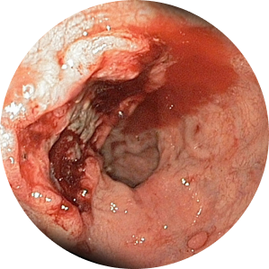
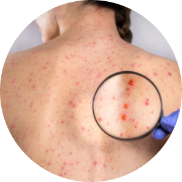
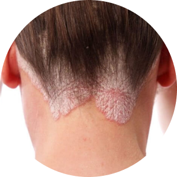

A cosa porterà
ignorare lo stress?
Malattie cardiovascolari

Ulcera gastrica ed altre
malattie gastrointestinali
malattie gastrointestinali

Malattie della pelle

Malattie autoimmuni
 malattia del cancro
malattia del cancro
Disturbi d'ansia, depressione